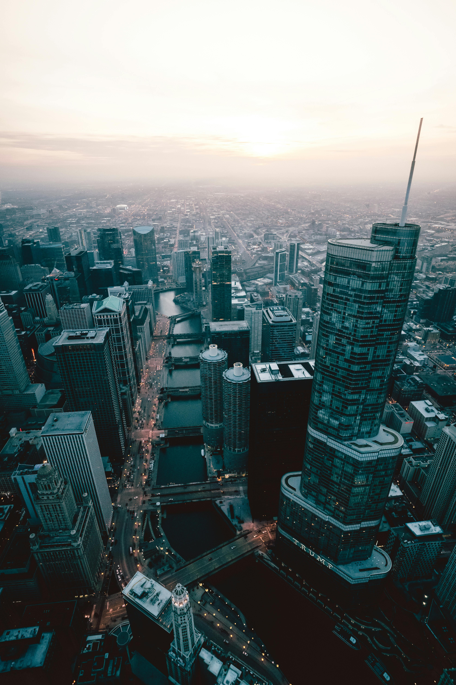
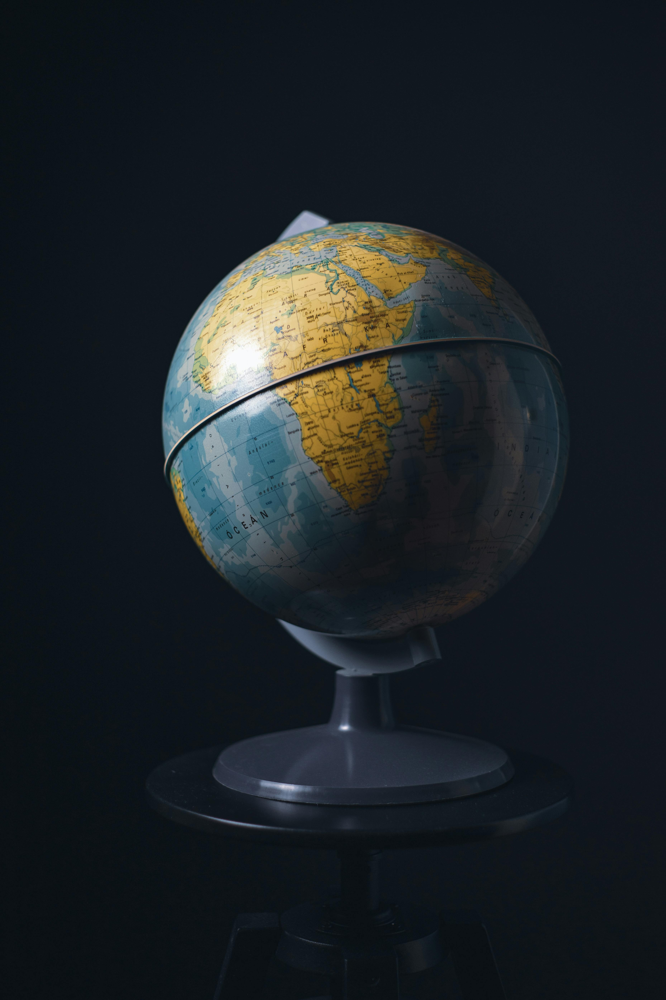
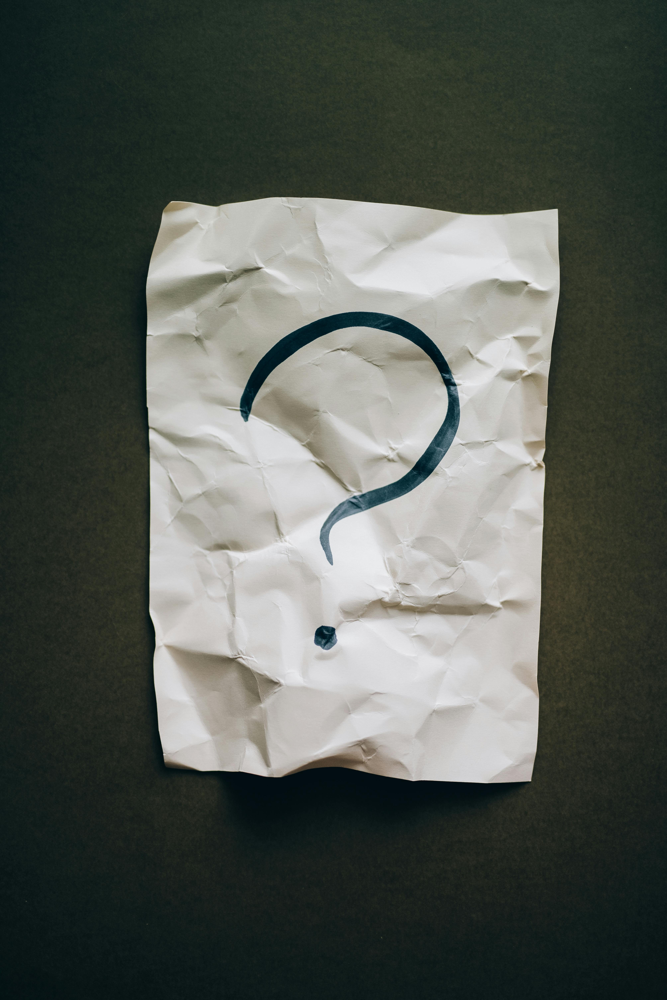

What Do We Do?
Umalrabeain connects South Africa to the global market by importing and distributing high-quality goods locally. We source products from trusted international suppliers, bridging gaps to ensure local access to exceptional products that meet diverse needs.
Our Vision
To be a trusted leader in importing and delivering world-class products and experiences that enrich the lives of South Africans while celebrating the diversity of cultures and traditions.
Why Umalrabeain?
At Umalrabeain, we bring the world to South Africa with a commitment to quality, reliability, and customer satisfaction. Our global partnerships and local expertise ensure that every product and service meets the highest standards, enriching communities and businesses alike.